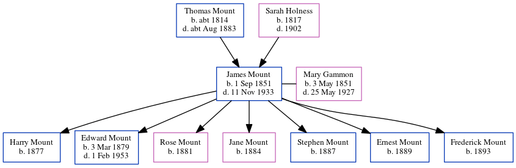

James Mount 1851 - 1933
[ Home ] | [ Calendar ] | [ Surnames Index ] | [ Census Index ] | [ Family History ]A stoker at gasworks and the child of Thomas Mount (a laborer) and Sarah Holness (a charwoman), James Mount, the first cousin four-times-removed on the mother's side of Nigel Horne, was born in Herne Bay, Kent, England on Sep 1, 18511,2, was baptized there at St Martin's Church, 24 Herne St on Sep 28, 1851 and also married Mary Gammon (a laundress with whom he had 7 children: Harry, Edward Thomas, Rose E, Jane, Stephen, Ernest and Frederick) there at Christ Church on Apr 30, 18762.
During his life, he was living at King Street in Herne Bay on Apr 7, 18614 and on Apr 2, 18715; at 7 Salts Lane in Herne Bay on Apr 3, 18818; at 24 King Street in Herne Bay on Apr 5, 18917; and at 49 King Street in Herne Bay on Mar 31, 19016 and on Apr 2, 19119.
He died on Nov 11, 1933 in Herne Bay3.
Parents
- Thomas was born c. 1814
- Sarah Harvey was born in 1817
Children
- Harry was born in 1877
- Edward Thomas was born on Mar 3, 1879
- Rose E was born in 1881
- Jane was born in 1884
- Stephen was born in 1887
- Ernest was born in 1889
- Frederick was born in 1893
Citations
- England & Wales births 1837-2006 - Findmypast
- Kent, Canterbury Archdeaconry Marriages - Findmypast
- England & Wales deaths 1837-2007 - Findmypast
- 1861 England, Wales & Scotland Census - Findmypast (was age 9 and the son of the head of the household)
- 1871 England, Wales & Scotland Census - Findmypast (was age 19 and the son of the head of the household)
- 1901 England, Wales & Scotland Census - Findmypast (was age 49 and the head of the household)
- 1891 England, Wales & Scotland Census - Findmypast (was age 40 and the head of the household)
- 1881 England, Wales & Scotland Census - Findmypast (was age 29 and the head of the household)
- 1911 Census for England & Wales - Findmypast (was age 57 and the head of the household)
Media
England & Wales births 1837-2006 - BMD/B/1851/3/IR/000651/033
England & Wales marriages 1837-2005 - BMD/M/1876/2/AZ/000201/145
1861 England, Wales - GBC-1861-0523-00296A
1891 England, Wales & Scotland Census - GBC/1891/0005766697
1881 England, Wales & Scotland Census - GBC/1881/0004747360
1871 England, Wales & Scotland Census - GBC/1871/0014201275
1911 Census for England & Wales - GBC/1911/RG14/04354/0131/1
England Births & Baptisms 1538-1975 - R_884305197
England & Wales deaths 1837-2007 - BMD/D/1933/4/AZ/000661/095
Kent Baptisms - GBPRS/CANT/B/96127477
1901 England, Wales & Scotland Census - GBC/1901/0006244914
Family Tree
Generated by ged2site. Last updated on Jun 11, 2024